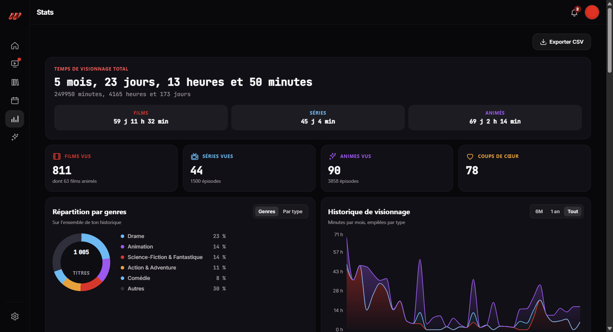
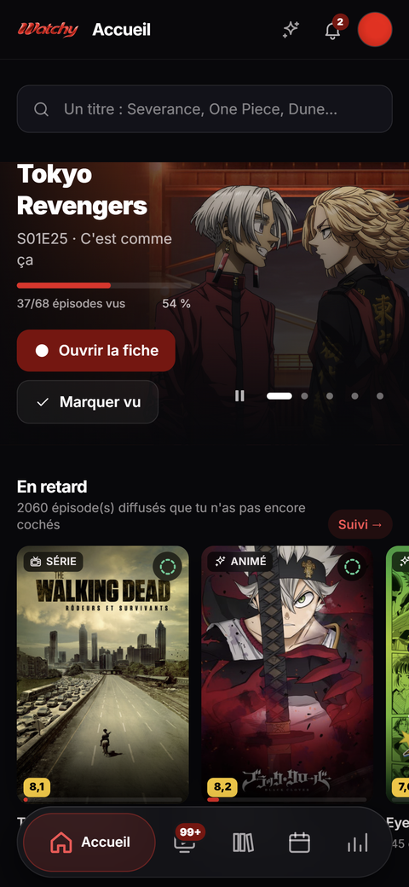

RAG & durable memory
Hybrid lexical/vector retrieval, note graphs, ingestion, reconciliation and source-of-truth boundaries.
ENGINEERING PORTFOLIO · OCT 2026
I build private RAG and memory pipelines, context-aware agent workflows, traceable audits and MCP integrations with explicit boundaries. Public code where possible. Clear limits everywhere.
EVIDENCE
Selected public projects supporting the technical claims below — not a list of hypothetical demos.
FOCUS
Hybrid lexical/vector retrieval, note graphs, ingestion, reconciliation and source-of-truth boundaries.
Retrieve just what an agent needs; use compact handoffs and separate known facts from unverified inference.
Semantic PR reviews, RAG consistency checks and SEO measurement with missing-data reporting.
OAuth, scoped tools, explicit allowlists, bounded execution and independently observable jobs.
SELECTED CASE STUDIES
Public repositoryPrivate case studyPrivate systems are discussed at a high level; source code and confidential operational details are not published.
Search, ingest and reuse knowledge without treating a retrieval index as the source of truth.
Long-lived notes and exported conversations become hard to retrieve, easy to duplicate and risky to pass wholesale to an LLM.
vault-mcp exposes hybrid lexical/vector search with reciprocal-rank fusion and a note-link graph; llm-wiki structures raw material into a searchable wiki; convia-sanitize separates redaction and RAG publication.
Write intents and consent gates, conflict handling, incremental processing, quota-aware ingestion, reproducible checks. Redaction reduces exposure; it is not a promise of perfect anonymisation.
Exact production topology evolves; the public RAG documentation is not a single verified live-deployment snapshot.
One principle across three domains: what was checked, what failed, what remains unknown.
A review that silently treats missing signals as success creates false confidence.
pr-reviewer runs isolated, read-only semantic PR reviews and publishes advisory GitHub commit statuses. llm-wiki includes a rule-based RAG lint (R1–R24). Watchy SEO reports combine available GA4/GSC signals and record collection gaps.
Independent deterministic CI remains separate from semantic review; model certification is required for a PASS; incomplete SEO data is reported as incomplete.
PR review is advisory, not a protected merge gate. Watchy analytics and audit reports are private; no invented performance figures are shown.
A web assistant can launch, follow and manage real agent missions without gaining a general-purpose remote shell.
Agents need to act on development machines, but unrestricted shell access expands the failure and security surface.
agent-orchestrator-mcp connects a web MCP client to an OAuth gateway, a VPS broker and a Windows runner controlling configured coding runtimes.
Structured job lifecycle, allowlisted workspaces and runtimes, fixed argument construction, independent runner-side validation and restricted tool permissions.

Safety properties describe implemented controls, not a blanket claim of perfect security.
An end-to-end product case study alongside the infrastructure work.
Watch history and next episodes are scattered across services and devices.
React 19 PWA, Fastify API, Prisma and PostgreSQL, containerised with Docker. Features include multi-platform imports, watchlists, statistics and a mobile interface.
Product, API and data-model work shown with existing screenshots of the running application.



Existing screenshots from the Watchy application
Application repository is private; screenshots are a product demonstration, not an uptime or adoption claim.
CONTEXT ENGINEERING
This is a working method applied across agent projects, not a standalone product with published token-savings benchmarks.
Methodology; no quantified efficiency or retrieval-quality improvement is claimed.
Search by the current task and cite the relevant source instead of injecting complete folders or transcripts.
Durable notes and versioned code are the source of record. RAG search results are an index, not independent proof.
Transfer decisions, constraints, state and next steps between agents — not entire conversation histories.
Label observations, hypotheses, stale data and missing measurements before actions or reports are approved.
MORE BUILDING BLOCKS
Selected public repositories and private studies. A private label never implies that the repository is accessible.
Reusable Rust MCP foundations: transport, authentication, lifecycle and observability.
OAuth and permission-aware MCP integration with persistent Excalidraw files.
Authenticated, scope-aware gateway to the official GitHub MCP server.
Apple Reminders and CalDAV tasks available through bounded MCP interfaces.
Agent-facing web and identity workflows with explicit security boundaries.
Disposable QEMU execution environment for bounded agent tasks.
Browser automation bridge with differentiated read/write permissions.
Offline 3D reconstruction pipeline from headset captures.
WHAT THIS ENABLES
01Audit, design or harden a document RAG and retrieval pipeline.
02Reduce context overload in multi-agent workflows and improve handoffs.
03Build MCP integrations with authentication and explicit permissions.
04Add evidence-based code review, technical audits and observability.
LET'S BUILD
Start with the public code and case studies. I can discuss the architecture and scope of private work without exposing data or credentials.